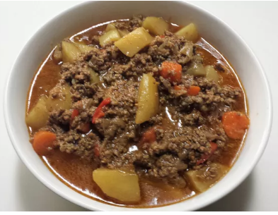

Home
Ground Beef Goulash

Description
Easy and filling meal perfect for freezing. Goes great with salad and brownies.
Ingredients
-
2 pounds lean ground beef
-
2 cups chopped onions
-
1 cup chopped red bell pepper
-
1 (14.5 ounce) can beef broth
-
4 potatoes, peeled and quartered
-
1 cup sliced carrots
-
⅓ cup ketchup
-
1 tablespoon Worcestershire sauce
-
1 teaspoon crushed garlic
-
1 ½ teaspoons paprika
-
1 dash hot sauce (such as Tabasco), or to taste
-
salt to taste
Steps
-
Heat a large skillet over medium heat. Cook and stir beef, onion, and red bell pepper in the hot skillet until browned and crumbly, 7 to 10 minutes; drain and discard grease.
-
Transfer beef mixture to a slow cooker; add beef broth, potatoes, carrots, ketchup, Worcestershire sauce, garlic, paprika, hot sauce, and salt. Stir the mixture, making sure the potatoes remain submerged in liquid.
-
Cook on Low for 4 hours.
Home